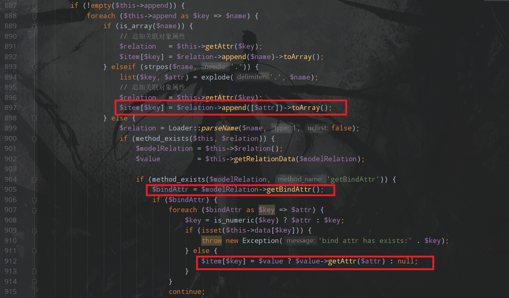

这个漏洞是框架的反序列化漏洞，只有二次开发实现了反序列化才可以利用，所以先构造漏洞代码，在/application/index/controller/Index.php中添加如下代码
1 | class Index |
Thinkphp 5.0.x反序列化最后触发RCE，要调用的Request类__call方法，所以直接找可用的__call方法
这里选择了Output类(/thinkphp/library/think/console/Output.php)，因为其中的block可以当作跳板
1 | public function __call($method, $args) |
从头开始分析，首先全局搜索__destruct，选择Windows类(/thinkphp/library/think/process/pipes/Windows.php)，代码如下
1 | public function __destruct() |
跟进removeFiles
1 | private function removeFiles() |
file_exists可以触发__tostring，所以寻找__tostring，找到了Model类(/thinkphp/library/think/Model.php)
1 | public function __toString() |
跟进toJson
1 | public function toJson($options = JSON_UNESCAPED_UNICODE) |
跟进toArray
1 | public function toArray() |
由于我们的目的是执行__call，所以要找函数调用的点，在toArray里有三处

然后看这三处哪里可控，经调试第三处可控，需要满足的条件是
1 | if (!empty($this->append)) |
且不满足
1 | if (is_array($name)) |
才能够进入到第三处，首先需要满足$relation是Model内的方法，然后经过如下赋值
1 | $modelRelation = $this->$relation(); |
需要满足$modelRelation可控，经过查找，可以将$modelRelation设为getError
1 | public function getError() |
然后跟进getRelationDate
1 | protected function getRelationData(Relation $modelRelation) |
这里需要$modelRelation为Relation类型。全局查找getRelation方法且为Relation类型的类，找到了HasOne(/thinkphp/library/think/model/relation/HasOne.php)
1 | public function getRelation($subRelation = '', $closure = null) |
可以看到这些条件都是满足的，然后看getBindAttr，发现在OneToOne类中是可控的
1 | public function getBindAttr() |
所以代码执行到
1 | $item[$key] = $value ? $value->getAttr($attr) : null; |
就可以调用Output类的__call方法，调用payload如下
1 | namespace think{ |
然后接着看Output，在__call中调用block
1 | protected function block($style, $message) |
继续writeln
1 | public function writeln($messages, $type = self::OUTPUT_NORMAL) |
write
1 | public function write($messages, $newline = false, $type = self::OUTPUT_NORMAL) |
而$this->handle是可控的，继续全局搜索write，寻找可控的点，找到了/thinkphp/library/think/session/driver/Memcached.php
1 | public function write($sessID, $sessData) |
这样就有找到了一个跳板set，然后继续找可以写入文件的方式，找到了/thinkphp/library/think/cache/driver/File.php
1 | public function set($name, $value, $expire = null) |
此处$filename可控，跟进getCacheKey
1 | protected function getCacheKey($name, $auto = false) |
回来继续看$data，从传入的$value获取，但是在之前writeln处已经传入了true，而且不可控，只能继续往下看，可以看到当成功写入文件时，会调用setTagItem方法，跟进
1 | protected function setTagItem($name) |
又调用了一次set，且此处两个参数都是可控的，所以可以在文件名处搞事情，通过编码然后将文件名写入shell中
所以最终利用exp如下
1 |
|
注意这个洞在windows下是复现不了的，因为windows对文件名有限制，会写入失败
参考链接：